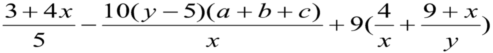
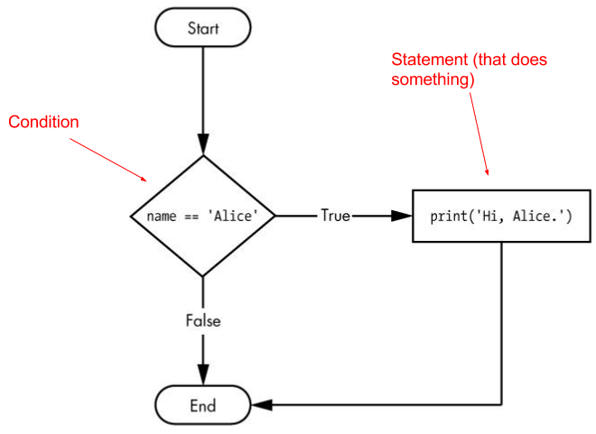
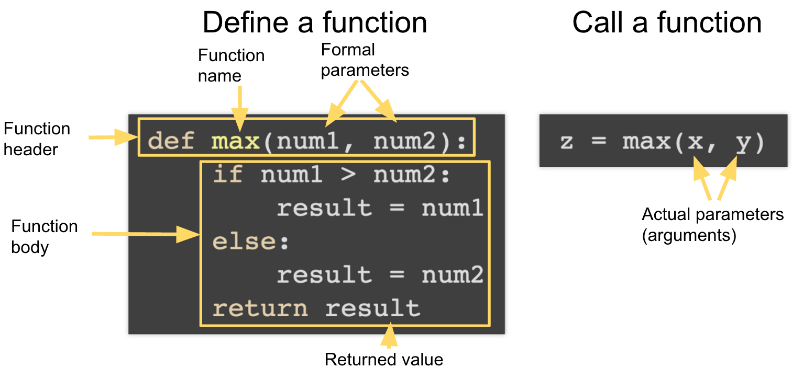
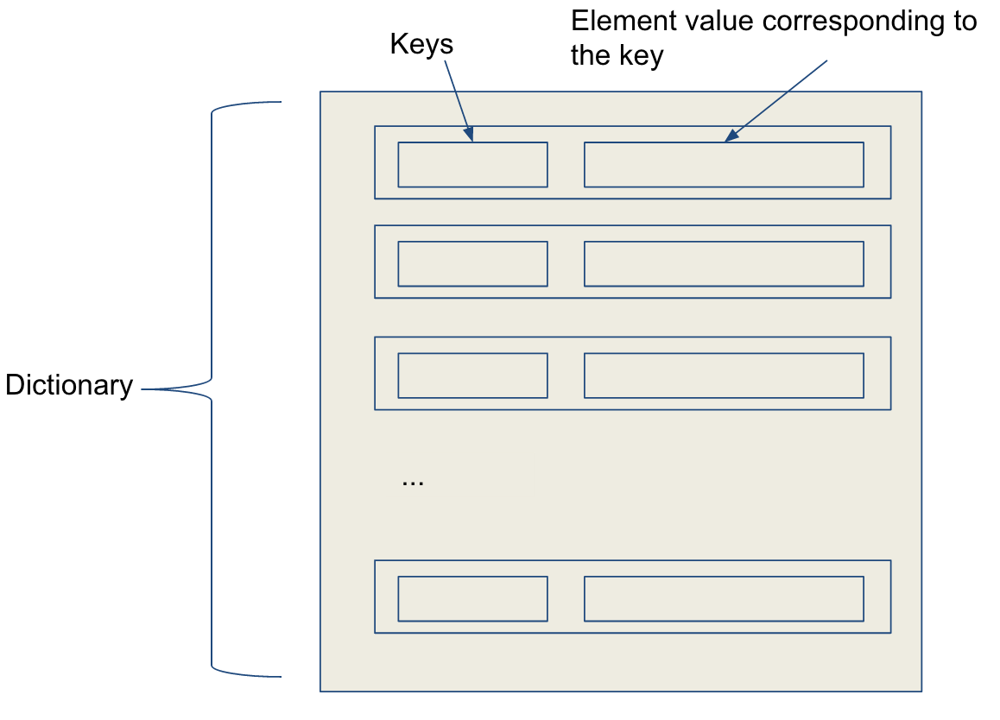
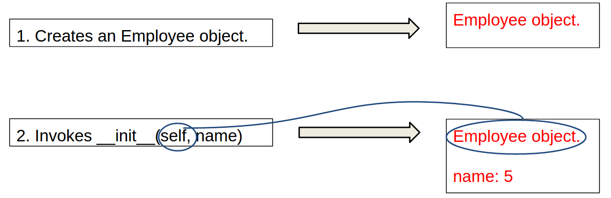
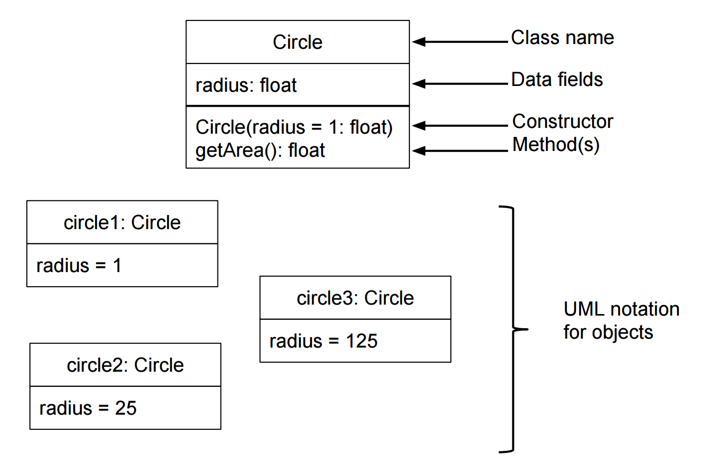

Introduction to programming using Python
23/10/2017
Matthieu Choplin
Objectives
- 11.00-11.15: installing python and getting to know Idle
- 11.15-12.00: declaring variables, using variables, type of objects, expressions, indentations, comments, function "input", ex (computing the area of a room)
- 12.00-12.30/13.00: lunch break
- 13.00-13.10: quiz about what we have seen before lunch
- 13.10-14.00: controlling the flow of execution with conditions (if, else, boolean operators), ex (password and login[1], grading students[2])
- 14.00-15.00: looping with while loop, for loop, ex (improving the login/password exercise)
- 15.30-16.00: lists, dictionaries, ex (guessing the capital)
- 16.00-17.00: class and objects, understanding attributes and methods, ex (creating cars)
Installing python (Windows)
- Be sure to download a version of Python 3.
- You'll find Python installers for 64-bit and 32-bit computers for each operating system on the download page, so first figure out which installer you need.
- Here's how to find out for sure:
- Select Start > Control Panel > System and check whether System Type says 64-bit or 32-bit.
- Download the Python installer (the filename will end with .msi) and double-click it. Follow the instructions the installer displays on the screen to install Python
- Select Install for All Users and then click Next.
- Install to the C:\Python34 folder by clicking Next.
- Click Next again to skip the Customize Python section.
Starting IDLE
- While the Python interpreter is the software that runs your Python programs, the interactive development environment (IDLE) software is where you’ll enter your programs, much like a word processor. Let’s start IDLE now.
- On Windows 7 or newer, click the Start icon in the lower-left corner of your screen, enter IDLE in the search box, and select IDLE (Python GUI).
Experimenting with the interpreter and the Numeric Operators
| Name | Meaning | Example | Result |
|---|---|---|---|
| + | Addition | 34 + 1 | 35 |
| - | Substraction | 34.0 - 0.1 | 33.9 |
| * | Multiplication | 300 * 30 | 9000 |
| / | Float division | 1 / 2 | 0.5 |
| // | Integer Division | 1 // 2 | 0 |
| ** | Exponentiation | 4 ** 0.5 | 2.0 |
| % | Remainder | 20 % 3 | 2 |
Arithmetic expressions
...is translated to:
(3 + 4 * x) / 5 – 10 * (y - 5) * (a + b + c) / x +\
9 * (4 / x + (9 + x) / y)NB: the sign \ is an "escaped" character, to break a line for readability
Variable (1)
It is a space created in memory (in RAM) where we can temporarily store values or data. We use the sign '=' for assigning a value to a variable.
You can think of it like a box. For example, we store the value (or expression) 1 in the box (i.e the variable) a.
Notice that we do not specify the type (integer, string) of the variable, python sees it automatically.
a = 1
Variable (2)
a = 1The variable has a name so that we can reuse it. When we use a variable, it is for retrieving the value that it is holding.
>>> a = 1
>>> a
1
Variable (3)
- A variable name is a non-empty sequence of characters of any length with:
- The start character can be the underscore "_" or a capital or lower case letter.
- Python keywords are not allowed as identifier names!
Variable (4)
Reserved keywords that you should not used:
| and | as | assert | break | class | continue | def |
| del | elif | else | except | exec | finally | for |
| from | global | if | import | in | is | lambda |
| not | or | pass | raise | return | try | |
| while | with | yield |
Python Syntax - Expression
It represents something, like a number or a string. Expressions are nothing but values, except they can have operations like addition or subtraction.
>>> 1 # is an expression
>>> 2 + 3 # is also an expression
>>> "hello" # as well
We can put an expression (i.e. a value) in a variable
Using the function print
The print function displays what is given in parameter.
>>> print("Hello World")
- A function has a name
- A function has parameters (that can be optional)
- A function is executed!
Exercise 1: From algorithm to Python code
- Translate the following algorithm into Python code:
- Step 1: Use a variable named miles with initial value 100 .
- Step 2: Multiply miles by 1.609 and assign it to a variable named kilometers
- Step 3: Display the value of kilometers with the function print()
Show solution
miles = 100
kilometers = miles * 1.609
print(kilometers)Exercise 2.1: Area of a squared room
- The length and width are hardcoded variables for now.
- Use variables (for length, width and area)
- The multiply operator in Python is the sign*
- Formulae of the area of a square: length * width
- Use the print() function to display the result
Show solution
length = 3
width = 4
area = length * width # we are using variables defined above
print("The area of the squared room of length", \
length, "and width", width, "is", area)Using the function input()
The input() function waits for the user to type some text on the keyboard and press ENTER.
>>> a = input("Enter a value")
>>> print(a)
Using the function type()
The function type gives the type of a value
>>> type(1)
<class 'int'>
Using the type() function, can you tell what the type of 'abc' is?
Using the function float()
The function float is converting a value into a numeric value if possible
>>> float("234")
234
Exercise 2.2: Dynamic Area
- The length and width are dynamic variables now.
- Use the input() function for taking the values from the user.
- Convert the input received into a number with the function float()
Show solution
length = float(input("What is the length of the room? "))
width = float(input("What is the width of the room? "))
area = length * width # using variables defined above
print("The area of the squared room of length", \
length, "and width", width, "is", area)Python Syntax - Indentation
The indentation is the increase or decrease of space between the left margin and the first character of the line.
The code need to be properly indented, else python will raise an error.
For example, what is wrong here?
print("what is wrong?")
print("indented properly ")Python Syntax - Comments
If you want to comment a line, you can use the # (pound sign) that you place before the commented line
You can also comment multiple lines using ''' (triple quote) before and after the commented paragraph
Example
print("This line is not commented")
# print("This line will not do anything")
'''
print("Nothing to see here")
print("""This whole block is commented.
And it will not show anything when we run the program""")
'''
Exercise:
Write a program that converts pounds into euros.
- The values can be hard coded for now (it means that the program will not be dynamic)
- Use comments
- Use variables
- Use print
Exercise:
- Write a program that ask the user what amount is to be converted in euros, convert it and display the result.
- Hint: we are going to need the function input and the function float
Show solution
rate = 0.8
pounds = float(
input("Enter the amount you would like to convert and press ENTER "))
euros = pound * rate
print(pounds, "pounds is", euros, "euros")Lunch break?
Quiz
Exercise: finding and fixing a bug (due to a logical error)
- Explain what this program is supposed to do and what the bug is here:
vat_rate = 20/100
car_price = 34500
# compute the gross value of the car by removing
# the tax value from the car_price
car_price * (1 - vat_rate)
print("The gross value of the car is",
car_price, "pounds")
Controlling the flow of our programs
We can represent the flow of execution with a flow chart
Structure of a simple if statement
Pseudo code:
if condition:
# statement (mind the indentation)Example, representation of the flow chart example in python code:
if name=='Alice':
print('Hi Alice')The two-way if statement
Pseudo code:
if condition:
# statement (mind the indentation)
else:
# statement executed when the condition is False
Example, representation of the flow chart example in python code with an else statement:
if name=='Alice':
print('Hi Alice')
else:
print('Hi')Multiple Alternative if Statements
The naive way
if condition:
# statement (mind the indentation)
else:
if condition:
# statement executed when
# the previous condition is False
else:
# statement executed when none of
# the previous condition is verified
Multiple Alternative if Statements
The better way, the pythonc way
if condition:
# statement (mind the indentation)
elif condition:
# statement executed when
# the previous condition is False
elif condition:
# statement executed when none of
# the previous condition is verified
else:
# executed when all conditions are FalseValue of the condition
The program will execute the statement only if the condition is verified. Only if the condition is True.
The condition is actually a boolean.
The Boolean Type
- It has only 2 possible values: True or False. Notice that they are both capitalized, which is important because Python is case sensitive
- It is often obtained as a result of a comparison expression.
The Comparison Operators
| Operator | Meaning |
|---|---|
| < | less than |
| <= | less than or equal |
| > | greater than |
| >= | greater than or equal |
| == | equal to |
| != | not equal to |
Examples
'hello' == 'hello'
'hello' == 'Hello'
'dog' != 'cat'
True == True
True != False
42 == 42.0
42 == '42'Difference between '==' and '='
- The sign = is the sign of assignment, it is used for assigning a value to a variable
- The sign == is the sign of comparison, it compares 2 values and return a boolean (True or False)
Exercise: password
Create a program that ask the user for a password.
- Have the password defined in "clear" in your program, in a variable called "PASSWORD"
- Use input() to receive the password entered by the user
- If the word entered by the user matches the password, display "Access Granted", else, "Forbidden"
Solution: password
Show solution
PASSWORD = 'super_password123'
password_entered = input("Enter the password: ")
if password_entered == PASSWORD:
print("Access Granted")
else:
print("Forbidden")
Truth tables
Show every possible result of a Boolean operator.
The and Operator’s Truth Table
| Expression | Evaluates to... |
|---|---|
| True and True | True |
| True and False | False |
| False and True | False |
| False and False | False |
The or Operator’s Truth Table
| Expression | Evaluates to... |
|---|---|
| True or True | True |
| True or False | True |
| False or True | True |
| False or False | False |
The not Operator
It operates on only one Boolean value (or expression). The not operator simply evaluates to the opposite Boolean value.
not True
not not True
not 1 != 2
Exercise: password and login
Create a program that ask the user for a login and password.
- Have the password "PASSWORD" AND login "LOGIN" defined in "clear" in your program, in variables
- Use input() to receive the password and login entered by the user
- If login and password match the values of your PASSWORD and LOGIN, display "Access Granted", else, "Forbidden"
Solution: password and login
Show solution
PASSWORD = 'super_password123'
LOGIN = 'superadmin'
login_entered = input("Enter the login: ")
password_entered = input("Enter the password: ")
if password_entered == PASSWORD \
and login_entered == LOGIN:
print("Access Granted")
else:
print("Forbidden")
Exercise: grading students
Write a program that is going to give the grade of a student according to the score obtained.
- Display 'A' if the score is greater than 90
- Display 'B' if the score is between 80 and 90
- Display 'C' if the score is between 70 and 80
- Display 'D' if the score is between 60 and 70
- Display 'F' if the score is lower than 60
Solution: grading students
Show solution
score = int(input("Enter the score: "))
if score >= 90.0:
grade = 'A'
elif score >= 80.0:
grade = 'B'
elif score >= 70.0:
grade = 'C'
elif score >= 60.0:
grade = 'D'
else:
grade = 'F'
print('The grade is ', grade)
Quiz
Quiz (7)
What is wrong in the following code? What happened if you run it?
radius = -20
if radius > 0:
area = radius * radius * 3.14
print("The area is", area)
- Looping with while
- Looping with for
Motivation
On one of our previous programs, we asked the user to enter a password.
- If the password was correct, we printed "Access Granted"
- Else, we printed, "Forbidden"
PASSWORD = 'super_password123'
password_entered = input("Enter the password: ")
if password_entered == PASSWORD:
print("Access Granted")
else:
print("Forbidden")Motivation
However, the user only had one chance to enter a correct password. If the password was incorrect or correct, the program would stop.
What if we want to make the user able to try more than once to enter a correct password?
Structure of the while loop, flow chart

Structure of the while loop
while condition:
# statementWhere:
- The condition is an expression that takes the value True or False (boolean)
- The statement does something, mind the indentation
- While the condition is True, the statement or body of the loop is executed
- Each time that the body of the loop is executed is an iteration
The while loop applied to our problem
PASSWORD = 'super_password123'
password_entered = ''
while password_entered!=PASSWORD:
password_entered = input("Enter the password: ")
if password_entered == PASSWORD:
print("Access Granted")
else:
print("Forbidden")Where:
- The condition is the boolean value given by the comparison of the password_entered compared to PASSWORD
Structure of the while loop, flow chart

Reminder: using variable
You cannot use a variable that has not been declared
PASSWORD = 'super_password123'
while password_entered!=PASSWORD:
password_entered = input("Enter the password: ")
if password_entered == PASSWORD:
print("Access Granted")
else:
print("Forbidden")Can you see why this is wrong? Try to run this program. See the error and explain what you need to correct.
Reminder: using variable
You need to declare the variable password_entered before using it, else, you get:
NameError: name 'password_entered' is not defined
PASSWORD = 'super_password123'
password_entered = ''
while password_entered!=PASSWORD:
password_entered = input("Enter the password: ")
if password_entered == PASSWORD:
print("Access Granted")
else:
print("Forbidden")How to avoid infinite loop
Make sure that the condition gets False at some point during the execution of the program
You can implement a counter, to limit the number of iterations:
counter=0
while counter < 5:
counter = counter + 1 # that you can also write counter+=1
print('test infinite loop')NB: counter = counter + 1 is equivalent to counter += 1
We say that we increment the counter at each iteration
The keyword break
Instead of a condition, you can also use the keyword break to end the iteration of a loop.
while True:
print('Please type your name.')
name = input()
if name == 'your name':
break
print('Thank you!')The keyword continue
You can use the keyword continue to ignore the remaining code in the iteration and jump to the next iteration
sum = 0
number = 0
while number < 3:
number += 1
if (number ==2):
continue
sum += number
print("The sum is ", sum)Combining break and continue
while True:
print('Who are you?')
name = input()
if name != 'Joe':
continue
print('Hello, Joe. What is the password? (It is a fish.)')
password = input()
if password == 'swordfish':
break
print('Access granted.')Exercise: quit the program with Q
Enable the use to enter some text and only quit the program if he clicks on "q" or "Q"
Hint
Use the break keyword.
Show solution
while True:
my_input = input('Type "q" or "Q" to quit: ')
if my_input.upper() == "Q":
breakSentinel value
This is what you have just used in the previous exercise.
A sentinel value is a value entered by the user (with input) that will make the program stop. You can put a sentinel value in your loop to decide when you want to break it, to stop it.
Structure of the for loop
for element in sequence:
# statementWhere:
- element is a variable that is going to take the value of each element of the sequence
- element is NOT a keyword, it is a variable name, so you can give it whatever name you want
- the keywords are for and in
- notice the indentation that indicates the body of the loop (same as for while)
Example: a string is a sequence
A string is a sequence of characters on which we can iterate.
The value of element is going to be the value of each character of the string (each letter of the word) successively
for element in ('matt'):
if element not in 'aeiou'):
print(element)The function range
You can create a sequence of numbers with the function range()
for element in range(initialValue, endValue, step):
# statementWhere:
- initialValue and step value are optional arguments
- The default initialValue is 0 and the endValue is excluded from the interval
- step represents the increment and can be positive or negative
Example: range(initialValue, endValue)
Notice how the endValue is excluded
for v in range(4, 8):
print(v)Example: range(initialValue, endValue, step)
Step specifies the increment
for v in range(3, 9, 2):
print(v)Exercise: conversion from miles to kilometers
Write a program that displays the following table (note that 1 mile is 1.609 kilometres):
Miles Kilometres 1 1.609 2 3.218 ... 9 15.481 10 16.090
Solution: conversion from miles to kilometers
Show solution
print("Miles"+ " " + "Kilometers")
miles = 1
while miles <= 10:
print(str(miles) + " "+ str(miles * 1.609))
miles += 1
Writing our own functions
Built in functions seen so far
| Input/Ouput | Conversion type: | Introspection: |
|---|---|---|
| input() | int() | type() |
| print() | float() |
All the built in functions: https://docs.python.org/3.6/library/functions.html
Defining our own function
To define a function, we use the keyword def, the name of the function, the brackets, and the colon
Then the body of the function needs to be indented
def name_of_the_function():
# body of the functionWhen we define a function, we just make python see that the function exist but it is not executed
def my_function():
print("THIS IS MY FUNCTION")
Calling our own function
To call or execute or run a function, we use the name of the function AND the brackets, without the brackets, the function is not called.
name_of_the_function()Notice the difference between defining and calling a function
def my_function():
print("THIS IS MY FUNCTION")
my_function()Defining and Calling Functions
A function is a collection of statements that are grouped together to perform an operation.
How a function gets called
Functions With/Without Return Values
- A function with the return keyword explicitly return a value. For example the function max() in the previous program.
- A function does something but does not return a value. For example the function main() in the previous program.
Example of a function that does something without returning a value
def printGrade(score):
# Print grade for the score
if score >= 90.0:
print('A')
elif score >= 80.0:
print('B')
elif score >= 70.0:
print('C')
elif score >= 60.0:
print('D')
else:
print('F')
def main():
score = eval(input("Enter a score: "))
print("The grade is ", end = "")
printGrade(score)
main() # Call the main functionExample of a function that returns a value
def getGrade(score):
# Return the grade for the score
if score >= 90.0:
return 'A'
elif score >= 80.0:
return 'B'
elif score >= 70.0:
return 'C'
elif score >= 60.0:
return 'D'
else:
return 'F'
def main():
score = eval(input("Enter a score: "))
print("The grade is", getGrade(score))
main() # Call the main function
The None Value
A function that does not return a value is known as a void function. In Python, such function returns a special None.
def sum(number1, number2):
total = number1 + number2
print(sum(1, 3))Passing Arguments by Positions
Suppose you have the following function:
def nPrintln(message, n):
for i in range(0, n):
print(message)What is the output of nPrintln("Welcome to Python", 5)?
What is the output of nPrintln(15, "Computer Science")?
What is wrong? How to fix?
Keyword Arguments
With the same function:
def nPrintln(message, n):
for i in range(0, n):
print(message)What is the output of nPrintln(message="Welcome to Python", n=5)
What is the output of nPrintln(n = 4, message = "Computer Science")
What is wrong? How to fix?
Default Arguments
Python allows you to define functions with default argument values. The default values are passed to the parameters when a function is invoked without the arguments.
def printArea(width = 1, height = 2):
area = width * height
print("width:", width, "\theight:", height, "\tarea:", area)
printArea() # Default arguments width = 1 and height = 2
printArea(4, 2.5) # Positional arguments width = 4 and height = 2.5
printArea(height = 5, width = 3) # Keyword arguments width
printArea(width = 1.2) # Default height = 2
printArea(height = 6.2) # Default widht = 1
Exercise: Guess Number
Make a program to ask the user to guess the number that has been randomly generated.
Start from this file: GuessNumber.py (right click and save as)
- The user will be able to try continuously until he finds the correct number.
- The program will stop as soon as the number is found, i.e. as soon as the random number matches the entered number
- At each iteration, i.e. each time the user tries a number and presses enter, the program will say if the number is too high, too low or correct
Solution: Guess Number
Show solution
import random
# Generate a random number to be guessed
number = random.randint(1, 100)
def guess_number():
print("Guess a magic number between 0 and 100")
guess = -1
while guess != number:
guess = int(input("Enter your guess: "))
if guess == number:
print("Yes, the number is", number)
elif guess > number:
print("Your guess is too high")
else:
print("Your guess is too low")
guess_number()
Introducting the class and object concepts with the List
What is the difference between an object and a type?
A type or a class is what is going to create an object
Built in types and objects seen so far:
| Types | Objects | Constructor |
|---|---|---|
| Integer | 1, 3, 4, 5, 999, -3, -4 | int() |
| Float | 1.333, -0.5, 0.001 | float() |
| String | "Foo", 'bar', "" | str() |
An object has methods
You can find the method of an object with the function dir(), which returns the attributes of an object.
>>> dir("abc")
['__add__', '__class__', '__contains__', '__delattr__', '__dir__', '__doc__', '__eq__', '__format__', '__ge__', '__getattribute__', '__getitem__', '__getnewargs__', '__gt__', '__hash__', '__init__', '__iter__', '__le__', '__len__', '__lt__', '__mod__', '__mul__', '__ne__', '__new__', '__reduce__', '__reduce_ex__', '__repr__', '__rmod__', '__rmul__', '__setattr__', '__sizeof__', '__str__', '__subclasshook__', 'capitalize', 'casefold', 'center', 'count', 'encode', 'endswith', 'expandtabs', 'find', 'format', 'format_map', 'index', 'isalnum', 'isalpha', 'isdecimal', 'isdigit', 'isidentifier', 'islower', 'isnumeric', 'isprintable', 'isspace', 'istitle', 'isupper', 'join', 'ljust', 'lower', 'lstrip', 'maketrans', 'partition', 'replace', 'rfind', 'rindex', 'rjust', 'rpartition', 'rsplit', 'rstrip', 'split', 'splitlines', 'startswith', 'strip', 'swapcase', 'title', 'translate', 'upper', 'zfill']NB: the dunder methods (with double underscore), are "special methods" in python that can be overridden. We will come back on that later.
Difference between methods of objects and builtin functions
The methods of an object can only be called on an object.
>>> "speak louder".upper()
'SPEAK LOUDER'A builtin function does not need an object to be called.
>>> len("number of character")
19NB: len() give the number of element in a sequence
The type List
Creating list using the list constructor
list1 = list() # Create an empty list
list2 = list([2, 3, 4]) # Create a list with elements 2, 3, 4
list3 = list(["red", "green", "blue"]) # Create a list of strings
list4 = list(range(3, 6)) # Create a list with elements 3, 4, 5
list5 = list("abcd") # Create a list with characters a, b, cThat is the equivalent of:
list1 = [] # Same as list()
list2 = [2, 3, 4] # Same as list([2, 3, 4])
list3 = ["red", "green"] # Same as list(["red", "green"])The List methods
You can find the different methods of a list thanks to the function dir()
>>> dir([])
['__add__', '__class__', '__contains__', '__delattr__', '__delitem__', '__dir__', '__doc__', '__eq__', '__format__', '__ge__', '__getattribute__', '__getitem__', '__gt__', '__hash__', '__iadd__', '__imul__', '__init__', '__iter__', '__le__', '__len__', '__lt__', '__mul__', '__ne__', '__new__', '__reduce__', '__reduce_ex__', '__repr__', '__reversed__', '__rmul__', '__setattr__', '__setitem__', '__sizeof__', '__str__', '__subclasshook__', 'append', 'clear', 'copy', 'count', 'extend', 'index', 'insert', 'pop', 'remove', 'reverse', 'sort']We are going to look at: 'append', 'clear', 'copy', 'count', 'extend', 'index', 'insert', 'pop', 'remove', 'reverse', 'sort'
How to see what a method can do
Look at the builtin help:
>>> help([].append)
Help on built-in function append:
append(...) method of builtins.list instance
L.append(object) -> None -- append object to endExperiment in the interpreter:
my_list = ["foo", "bar", 124, []]
print(my_list)
my_list.append("abc")
print(my_list)Summary of the list methods
| append(x: object): None | Add an item x to the end of the list. |
| insert(index: int, x: object): None | Insert an item x at a given index. Note that the first element in the list has index 0. |
| remove(x: object): None | Remove the first occurrence of the item x from the list. |
| index(x: object): int | Return the index of the item x in the list. |
| count(x: object): int | Return the number of times item x appears in the list. |
| sort(): None | Sort the items in the list. |
| reverse(): None | Reverse the items in the list. |
| extend(L: list): None | Append all the items in list L to the list. |
| pop([i]): object | Remove the item at the given position and return it. The square bracket denotes that parameter is optional. If no index is specified, list.pop() removes and returns the last item in the list. |
Exercise
Write a program that reads integers from the user and stores them in a list (use input() and append()). Your program should continue reading values until the user enters 'q' (the sentinel value). Then it should display all of the values entered by the user in order from smallest to largest, with one value appearing on each line. Use either the sort method or the sorted built in function to sort the list.
Solution
data = []
num = input("Enter an integer ('q' to quit): ")
while num != 'q':
data.append(int(num))
num = input("Enter an integer ('q' to quit): ")
data.sort()
print("The values, sorted into ascending order are:")
for element in data:
print(element)Iterating on a list
The list is a sequence on which you can iterate.
With for:
for element in ["foo", 11, "bar"]:
print(element)With while:
my_list = ["foo", 11, "bar"]
i=0
while i < len(my_list):
print(my_list[i])
i+=1Reminder about functions
We define the function like this:
def main():
print('The function', main.__name__, 'has been called')And we call the functions like this:
main()NB: notice the brackets: when we define and when we call!
Try to use functions in the next exercises.
Passing Lists to Functions
def printList(lst):
for element in lst:
print(element)
# Invoke the function
lst = [3, 1, 2, 6, 4, 2]
printList(lst)Returning a List from a Function
Example: a function that returns a reversed list
def reverse(lst):
result = []
for element in lst:
result.insert(0, element)
return result
list1 = [1, 2, 3, 4, 5, 6]
list2 = reverse(list1)
print(list2)The built in function reverse actually exists for doing the same thing
Exercise
Complete this program to get the minimum number of the list and its index
import random
random_list = [random.choice(list(range(1, 100))) for _ in range(10)]
def get_min(random_list):
# to complete
pass
get_min(random_list)Solution without using built in functions non list methods
Solution
import random
random_list = [random.choice(list(range(1, 100))) for _ in range(10)]
def get_min_index(any_list):
min = 100
index = 0
for i in any_list:
if i <= min:
min = i
min_index = index
index += 1
print("the min is", min)
print("its index is", min_index)
print(random_list)
get_min_index(random_list)Solution using built in functions and list methods
Solution
import random
random_list = [random.choice(list(range(1, 100))) for _ in range(10)]
def get_min_index(any_list):
print("the min is", min(any_list)) # using the min builtin
print("its index is", random_list.index(min(random_list))) # using the index method
print(random_list)
get_min_index(random_list)Manipulate element of a List with indexes
You can also access element of a list with indexes BUT you can also modify them:
my_list = ["foo", 11, "bar"]
print(my_list)
my_list[1] = "eleven"
print(my_list)
contrary to the string type.
my_string = "abracadabra"
my_string[0] = "O"
print(my_string)Difference between mutable and immutable objects
- You cannot modify an immutable object such as a string.
- You can modify a mutable object such as a list.
The +, *, [ : ], and in Operators (1/2)
+ is for concatenating list
* is for repeating a list
[ : ] is the slice operator, for extracting a sublist from a list
>>> list1 = [2, 3]
>>> list2 = [1, 9]
>>> list3 = list1 + list2
>>> list3
[2, 3, 1, 9]
>>> list3 = 2 * list1
>>> list3
[2, 3, 2, 3]
>>> list4 = list3[2:4]
>>> list4
[2, 3]The +, *, [ : ], and in Operators (2/2)
- Get the last element of a list with a negative index
- Check if an element is in a list with the in operator
>>> list1 = [2, 3, 5, 2, 33, 21]
>>> list1[-1]
21
>>> list1[-3]
2
>>> list1 = [2, 3, 5, 2, 33, 21]
>>> 2 in list1
True
>>> list1 = [2, 3, 5, 2, 33, 21]
>>> 2.5 in list1
FalseSplitting a String to a List
You can convert a string to a list with the split function on string.
>>> items = "Welcome to the UK".split()
>>> print(items)
['Welcome', 'to', 'the', 'UK']
>>> items = "34#13#78#45".split("#")
>>> print(items)
['34', '13', '78', '45']You can convert back a list to a string with the join function on string
>>> print(items)
['Welcome', 'to', 'the', 'UK']
>>> print(" ".join(items))
'Welcome to the UK'
Exercise - Eliminate duplicates
Write a function that returns a new list by eliminating the duplicate values in the list. Use the following function header:
def eliminateDuplicates(lst):Write a test program that reads in a list of integers, invokes the function, and displays the result. Here is the sample run of the program:
Enter ten numbers: 1 2 3 2 1 6 3 4 5 2 The distinct numbers are: 1 2 3 6 4 5
Solution
Solution
def main():
# Read numbers as a string from the console
s = input("Enter numbers: ")
items = s.split() # Extracts items from the string
numbers = [ int(x) for x in items ] # Convert items to numbers
print("The distinct numbers are:", eliminateDuplicates(numbers))
def eliminateDuplicates(list):
result = []
for element in list:
if not (element in result):
result.append(element)
return result
main()Dictionary
- Why dictionary?
- Suppose your program stores a million students and frequently searches for a student using the social security number. An efficient data structure for this task is the dictionary. A dictionary is a collection that stores the elements along with the keys. The keys are like an indexer.
Key/value pairs
Creating a dictionary
Empty dictionary:
dictionary = {}
# or
dictionary = dict()Populated dictionary:
dictionary = dict(john=40, peter=45)
# or
dictionary = {"john":40, "peter":45}
# or
dictionary = dict([('john',40), ('peter',45)])Adding/Modifying Entries
To add an entry to a dictionary, use dictionary[key] = value
>>> dictionary["susan"] = 50
>>> print(dictionary)
{'john': 40, 'susan': 50, 'peter': 45}Deleting Entries
To delete an entry from a dictionary, use del dictionary[key]
>>> del dictionary[“susan”]
>>> print(dictionary)
{'john': 40, 'peter': 45}Looping Entries
for key in dictionary:
print(key + ":" + str(dictionary[key]))The len and in operators
len(dictionary) returns the number of the elements in the dictionary
>>> dictionary = {"john":40, "peter":45}
>>> "john" in dictionary
True
>>> "johnson" in dictionary
False
>>> len(dictionary)
2The dictionary methods
| Methods | Meaning |
|---|---|
| list(dictionary.keys()): list | Returns a dict_keys type of object, that you can convert in a sequence of values with list(dictionary.keys()) |
| list(dictionary.values()): list | Returns a dict_values type of object, that you can convert with list(dictionary.values()) |
| list(dictionary.items()): tuple | Returns a dict_items type of object, that you can convert in a sequence of tuples (key, value) with list(dictionary.items()). |
| clear(): None | Deletes all entries. |
| get(key): value | Returns the value for the key. |
| pop(key): value | Removes the entry for the key and returns its value. |
Exercise: dictionary manipulation
- Create a dictionary that you put in a variable 'birthdays' with the following data:
- Write if statements that test to check if 'Yoda' and 'Darth Vader' exist as keys in the dictionary, then enter each of them with birthday value 'unknown' if their name does not exist as a key
- Display all the key-value pairs in the dictionary, one per line with a space between the name and the birthday, by looping over the dictionary's keys
- Delete 'Darth Vader' from the dictionary
- Bonus: Make the same dictionary by using dict() and passing in the initial values when you first create the dictionary
'Luke Skywalker': '5/24/19' 'Obi-Wan Kenobi': '3/11/57' 'Darth Vader': '4/1/41'
Exercise: Guess the capital
- Write a program that prompts the user to enter a capital for a random country.
- Upon receiving the user input, the program reports whether the answer is correct.
- The countries and their capitals are stored in a dictionary in this file (import it to use).
- The user’s answer is not case sensitive.
Solution
import random
from list_of_countries import COUNTRIES
def main():
countries = list(COUNTRIES.keys())
country_to_guess = random.choice(countries)
capital = input("What is the capital of "
+ country_to_guess + "? ").strip()
if capital.lower() == COUNTRIES[country_to_guess]\
.lower():
print("Your answer is correct")
else:
print("The correct answer should be "
+ COUNTRIES[country_to_guess])
main()Objects: illustration with the String object
- In Python, all data —including numbers and strings— are actually objects.
- An object is an entity. Each object has an id and a type.
>>> n = 3 # n is an integer
>>> id(n)
10914432
>>> type(n)
<class 'int'>
>>> f = 3.0 # f is a float
>>> id(f)
139757347082840
>>> type(f)
<class 'float'>
>>> s = "Welcome" # s is a string
>>> id(s)
139757323539824
>>> type(s)
<class 'str'>Methods
- You can perform operations on an object. The operations are defined using functions. The functions for the objects are called methods in Python. Methods can only be invoked from a specific object, using the dot notation
>>> s = "Welcome"
>>> s1 = s.lower()
>>> s1
'welcome'
>>> s2 = s.upper()
>>> s2
'WELCOME'
>>> Seeing what methods are available
- You can use the dir() introspection function to see what methods have been defined for an object
>>> dir("example of string")
['__add__', '__class__', '__contains__', '__delattr__', '__dir__',
'__doc__', '__eq__', '__format__', '__ge__', '__getattribute__',
'__getitem__', '__getnewargs__', '__gt__', '__hash__', '__init__',
'__iter__', '__le__', '__len__', '__lt__', '__mod__', '__mul__',
'__ne__', '__new__', '__reduce__', '__reduce_ex__', '__repr__',
'__rmod__', '__rmul__', '__setattr__', '__sizeof__', '__str__',
'__subclasshook__', 'capitalize', 'casefold', 'center', 'count',
'encode', 'endswith', 'expandtabs', 'find', 'format', 'format_map',
'index', 'isalnum', 'isalpha', 'isdecimal', 'isdigit', 'isidentifier',
'islower', 'isnumeric', 'isprintable', 'isspace', 'istitle', 'isupper',
'join', 'ljust', 'lower', 'lstrip', 'maketrans', 'partition', 'replace',
'rfind', 'rindex', 'rjust', 'rpartition', 'rsplit', 'rstrip', 'split',
'splitlines', 'startswith', 'strip', 'swapcase', 'title', 'translate',
'upper', 'zfill']The format() method
- The format method helps to format the string
- Either with positional arguments:
text = "During session {}, " \
"we learned to use {} ".format(5, 'OOP')- Or with named arguments
text = "During session {session_name}, " \
"we learned to use {topic} ".format(session_name=5, topic='OOP')Creating our own Class
Syntax:
class NameOfTheClass:
# the class bodyExample
class Employee:
passCreating instances of a class
Instances are objects created from the class blueprint. When we create an object of a class, we say that we instantiate the object
Example:
class Employee:
pass
employee1 = Employee()
employee2 = Employee()
print(type(employee1))
print(employee1)Attributes of an object
- To add an attribute we can simply add an attribute with the dot notation and assign a value to the attribute
class Employee:
pass
employee1 = Employee()
employee1.name = "Matt"The special initializer method
- Instead of adding the attribute after creating our object, we can create them directly when creating the object, in the initializer method
# class creation
class Employee:
def __init__(self, name):
self.name = name
#object creation
employee1 = Employee('Matt')Constructing Objects
- Once a class is defined, you can create objects from the class by using the following syntax, called a constructor:
my_new_object = ClassName(optional_arguments)Constructing Objects
The effect of constructing an Employee object with ...
employee1 = Employee(5)... is shown below:
Exercise: adding attribute
- Complete the previous code to create a new attribute "date_of_birth" to the Employee class, that will be "initialized"
- Create 2 employee objects with a name and a date_of_birth and retrieve their date of birth
Class attribute
- Like Instances, Classes can also have attributes
class Employee:
count = 0
def __init__(self):
Employee.count += 1
for i in range(3):
Employee()
Employee.countInstance Methods
- Methods are functions defined inside a class. They are invoked by objects to perform actions on the objects.
- All the methods, including the constructor have the first parameter self, which refers to the object that invokes the method.
class Employee:
def __init__(self, name):
self.name = name
def generate_email_address(self):
return self.name + "@company.com"
employee1 = Employee('Matt')
# we call the method on the object
employee1.generate_email_address()Exercise: adding a method
- Complete the previous code by adding an additional method (set_name) that will set a new name to the employee
- You should call the method like so:
employee1.set_name("Bob")employee1.nameAccessing Objects
- After an object is created, you can access its data fields and invoke its methods using the dot operator (.)
# we create an employee object
employee1 = Employee('Matt')
# we call the method of the object using the dot notation
employee1.generate_email_address()
# we access one of the attribute of the object
employee.nameUML Class Diagram
Trace execution
See what is happening in memory with Pythontutor (click link)
Example: Defining Classes and Creating Objects

Example: Defining Classes and Creating Objects
Exercise - The Rectangle class
Following the example of the Circle class, design a class named Rectangle to represent a rectangle. The class contains:
- Two data fields named width and height.
- A constructor that creates a rectangle with the specified width and height. The default values are 1 and 2 for the width and height, respectively.
- A method named getArea() that returns the area of this rectangle
- A method named getPerimeter() that returns the perimeter
Implement the class. Write a test program that creates two Rectangle objects—one with width 4 and height 40 and the other with width 3.5 and height 35.7. Display the width, height, area, and perimeter of each rectangle in this order.